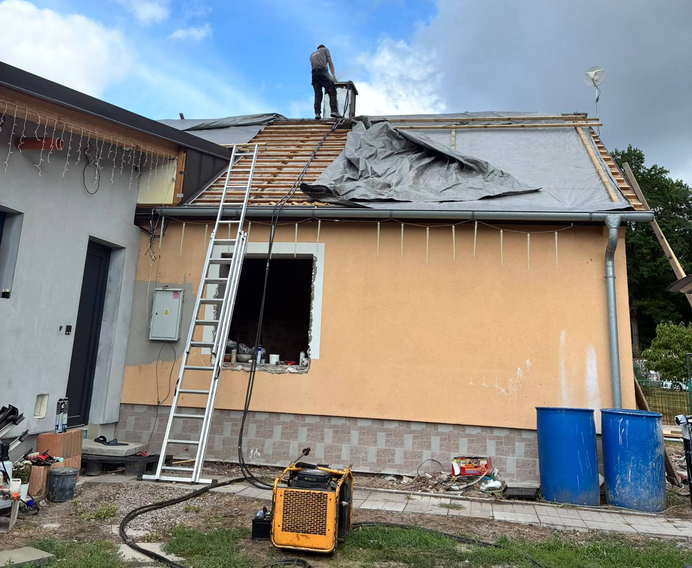
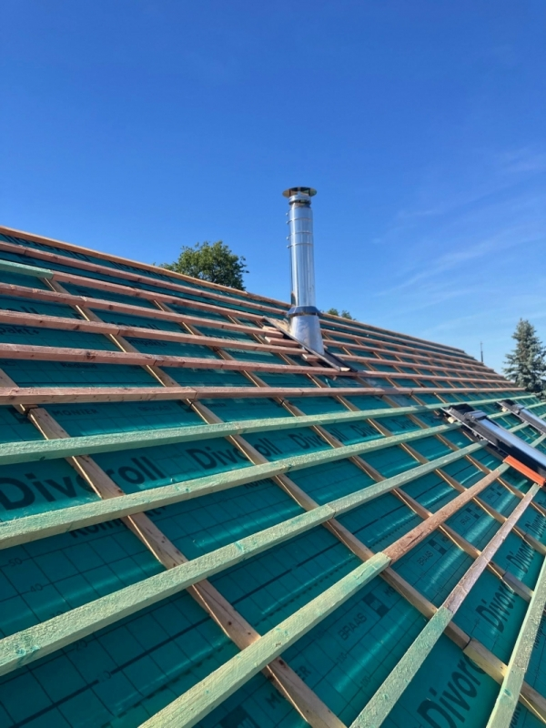

Čištění a kontrola
Pravidelná kontrola a čištění spalinové cesty od vyústění komína po napojení spotřebiče.


Od pravidelného čištění a kontroly spalinové cesty po úpravu stávajícího komína nebo stavbu nového. Rozsah práce vychází ze stavu komína a typu spotřebiče.
Poptat kominické práceSpalinová cesta potřebuje pravidelnou péči. Při změně spotřebiče nebo nevyhovujícím stavu komína může být nutná také technická úprava průduchu či nové řešení.
Pravidelná kontrola a čištění spalinové cesty od vyústění komína po napojení spotřebiče.
Rozšíření průduchu na potřebný průměr, například jako příprava před vložkováním.
Úprava stávajícího komína při změně spotřebiče nebo nevyhovujícím stavu spalinové cesty.
Realizace nových zděných i nerezových komínových řešení podle potřeb stavby.

Ilustrační realizace ze spřízněného webu Jiří Mayer / kominikhk.cz.
Vložkování a frézování se navrhuje podle skutečného stavu komína, požadovaného průměru a připojeného spotřebiče. Nový komín je další možností, pokud to zadání vyžaduje.
Popsat své zadáníPošlete místo, přibližný rozsah a termín. Společně upřesníme další postup.